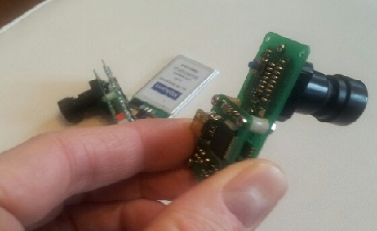
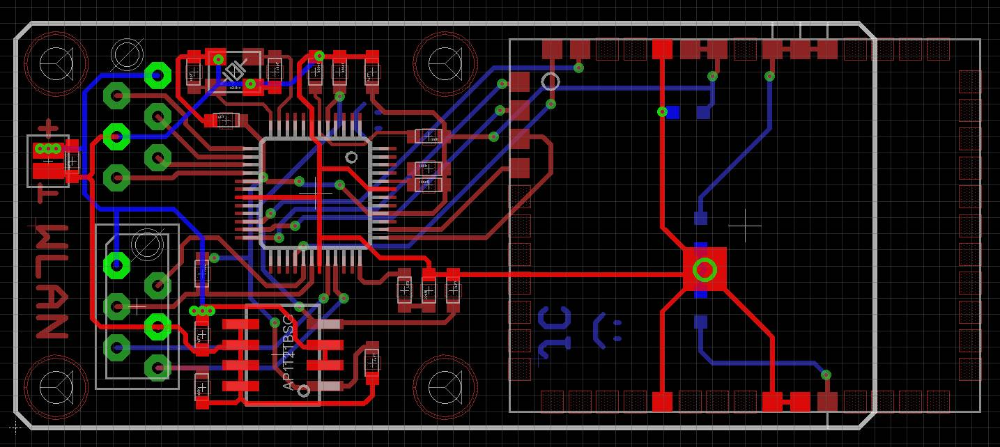

The eDVS128 cameras with USB and wifi interfaces. 
Back side of eDVS+wifi camera. The LED blinks 3 times quickly and pauses while trying to connect to the SSID. After connection the LED blinks slowly.
The PCB layout of the wifi module. 